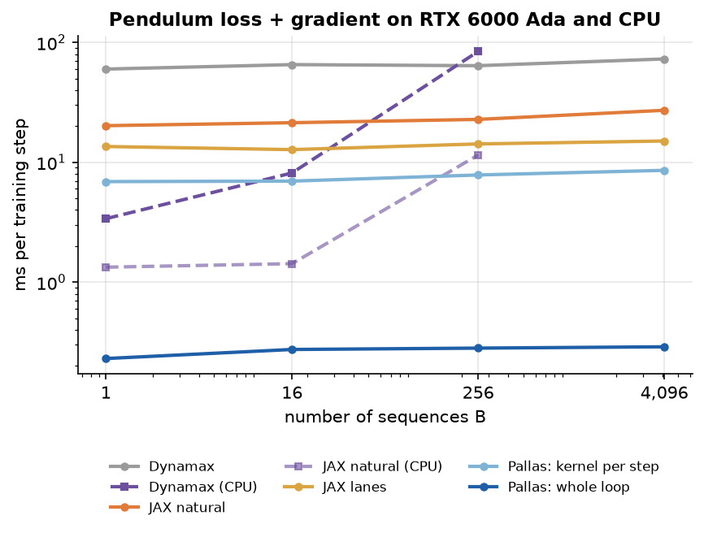
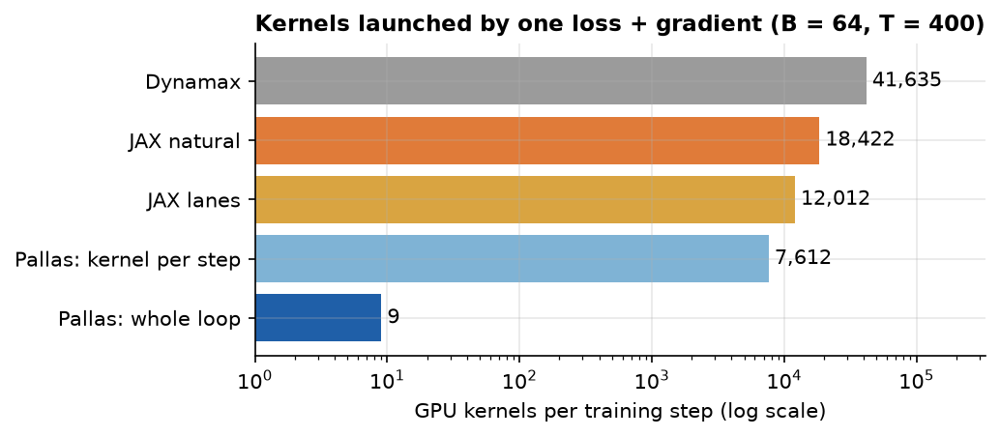
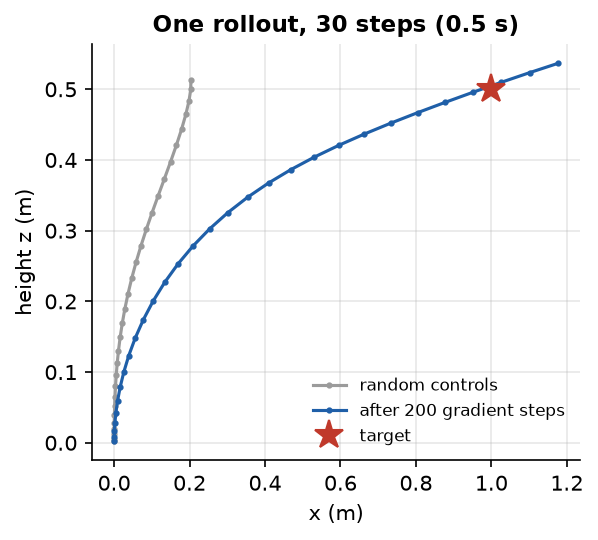
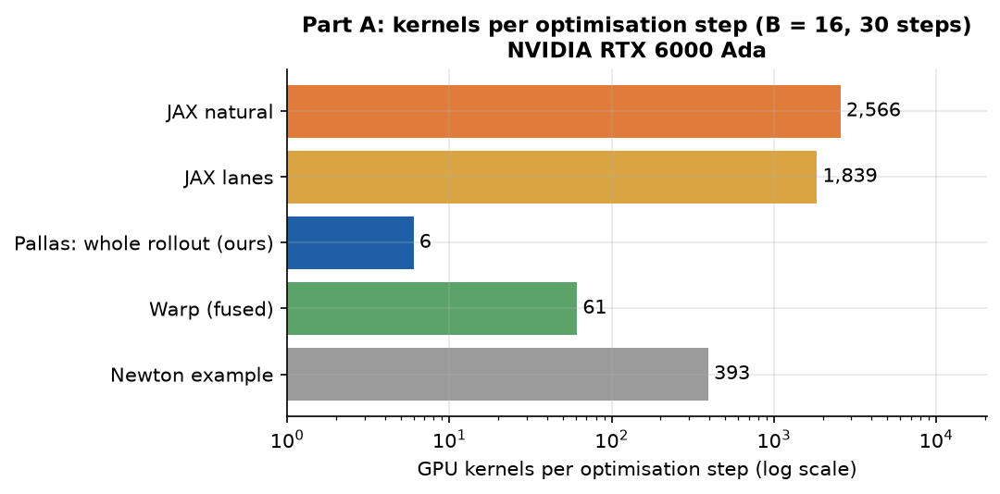
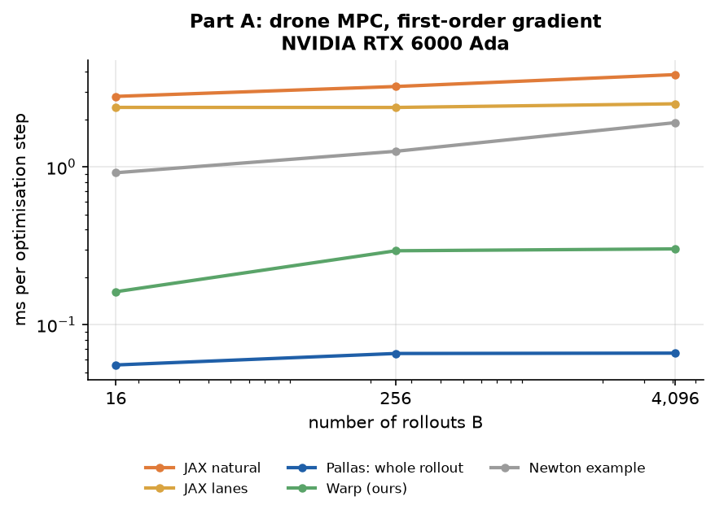
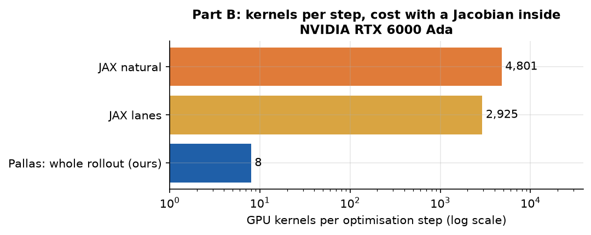
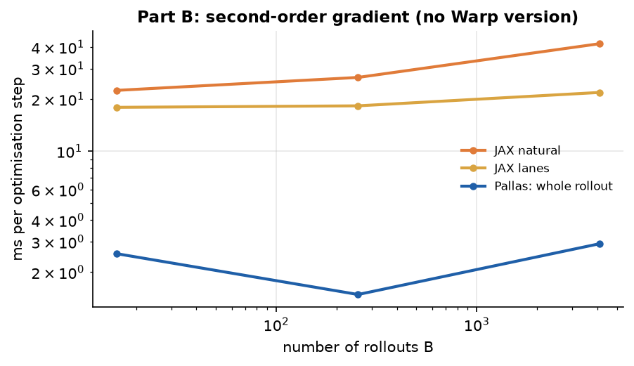
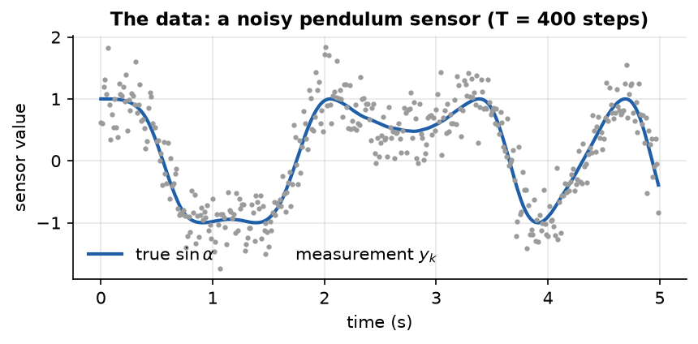
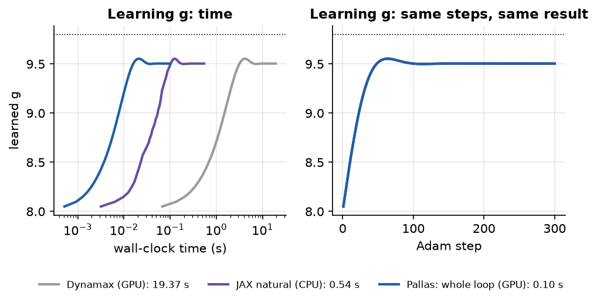

Fused GPU kernels with in-kernel automatic differentiation in JAX and Pallas, demonstrated on state estimation and model-predictive control.
Code: github.com/thribhuvanrapolu/accelerating-higher-order-autodiff
Experiments on: NVIDIA RTX 6000 Ada (48 GB) GPU and AMD Ryzen Threadripper PRO 9955WX CPU, in FP32.
Abstract
Many scientific models are long loops of small steps like an extended Kalman filter over a sensor log, a simulator rolled out for model-predictive control, or the time stepping of an ODE solver. Training them often needs higher-order automatic differentiation, because the forward computation already contains a derivative (a Jacobian for covariance propagation, a force computed as a gradient of an energy). In natural JAX, each step of such a loop compiles to dozens or hundreds of tiny GPU kernels. The runtime is then set by kernel-launch overhead, not by arithmetic, and a GPU can be slower than a CPU.
We present a simple recipe that removes this bottleneck:
- Write the step with one array per scalar (a "structure-of-arrays" layout).
- Run the entire loop inside one Pallas kernel.
- Obtain the backward pass from a second kernel that applies
jax.vjpinside the kernel. - Connect the two kernels with
jax.custom_vjp.
No derivative is written by hand, and derivatives of derivatives are generated automatically.
We evaluate the recipe on two official examples from established libraries. In both, one gradient processes \(B\) independent problems in parallel, while the \(T\) time steps of each problem must run one after another. In Experiment 1 the \(B\) problems are drone rollouts (simulations of candidate control plans). In Experiment 2 they are measurement sequences (separate 5-second sensor recordings of the same pendulum).
- Experiment 1, vs. NVIDIA Warp: Newton's differentiable drone (model-predictive control). For \(B = 16\) rollouts, as in Newton's example, the first-order gradient took 0.056 ms with Pallas, 0.162 ms with fused Warp and 0.917 ms with the official Newton example. With an uncertainty-aware objective that contains a Jacobian (second order), which released Warp cannot differentiate automatically, Pallas took 0.096 ms, 61.9× faster than natural JAX.
- Experiment 2, vs. Dynamax: a pendulum extended Kalman filter, where we learn gravity and sensor noise through the filter's log-likelihood (second order). For \(B = 1\) sequence of \(T = 400\) steps, the gradient took 59.93 ms with Dynamax and 0.231 ms with Pallas (259.9×). The 300-step fit on \(B = 16\) sequences took 19.37 s and 0.098 s respectively.
| Experiment | Implementation | Kernels per gradient | ms per gradient |
|---|---|---|---|
| 1: drone, first order (\(B = 16\) rollouts) | Newton example (Warp) | 393 | 0.917 |
| Warp (ours, fused) | 61 | 0.162 | |
| Pallas whole rollout | 6 | 0.056 | |
| 1: drone, second order (\(B = 16\) rollouts) | Warp 1.19 | – (needs a hand-written Jacobian) | – |
| JAX natural | 4,801 | 5.91 | |
| Pallas whole rollout | 8 | 0.096 | |
| 2: pendulum EKF (\(B = 1\) sequence) | Dynamax (GPU) | 32,427 | 59.93 |
| Dynamax (CPU) | – | 3.39 | |
| Pallas whole loop | 3 | 0.231 |
1. Introduction
1.1 Sequential programs with derivatives inside
A large class of scientific programs has the form
where:
- \(s_k\) is a small state (a few to a few dozen numbers);
- \(\Phi\) is a cheap step (hundreds to thousands of floating-point operations);
- \(T\) is long (tens to thousands of steps);
- we need \(\nabla_\theta L\) for learning, calibration or control.
Often the step \(\Phi\) itself contains a derivative:
- an extended Kalman filter propagates its covariance with the Jacobian \(F_k = \partial f / \partial x\);
- molecular dynamics computes forces as \(f = -\nabla E\);
- physics-informed losses contain \(u_{xx}\);
- Hamiltonian models evolve along \(\nabla H\).
1.2 The derivative-order rule
Let \(d\) be the number of derivatives nested inside the forward computation. Training then needs automatic differentiation of order
| \(d\) | examples | order needed for training |
|---|---|---|
| 0 | rollout objectives, trajectory optimisation | 1 (ordinary gradient) |
| 1 | Kalman filters, force fields, Hamiltonian models, physics-informed losses | 2 |
| 2 | Hessian-based methods (Newton steps, DDP/iLQR with second-order terms) inside the loop | 3 |
Higher-order automatic differentiation is routine in JAX: jax.grad of a function that calls jax.jacfwd simply
works. The difficulty is performance on GPUs (Section 2).
1.3 The two experiments
We test the recipe against two established libraries, each on its own official example.
| Experiment 1: vs. NVIDIA Warp (Section 5) | Experiment 2: vs. Dynamax (Section 6) | |
|---|---|---|
| problem | drone model-predictive control (Newton's official example) | learning \(g\) and \(r\) of a pendulum through an EKF (Dynamax's official example) |
| what \(B\) counts | rollouts (candidate control plans) | measurement sequences (sensor recordings) |
| time steps \(T\) | 30 simulator steps | 400 filter steps |
| inner derivatives \(d\) | Part A: \(d = 0\) (first order). Part B: \(d = 1\) (second order) | \(d = 1\) (second order) |
| what it shows | Part A: speed against a fast, hand-built first-order tool. Part B: Pallas handles a Jacobian inside the objective automatically, while released Warp needs it written by hand | a natural JAX library is launch-bound, and the GPU is slower than the CPU |
| headline | Part A (\(B = 16\)): 0.056 ms vs. 0.162 ms (Warp) and 0.917 ms (Newton). Part B: 0.096 ms vs. 5.91 ms (natural JAX) | \(B = 1\): 0.231 ms vs. 59.93 ms (Dynamax), 259.9× |
2. Why sequential programs are launch-bound on GPUs
In JAX a loop is written with lax.scan, and XLA compiles the loop body into GPU kernels. XLA cannot fuse the whole
body into one kernel. Matrix products and reductions typically run as their own kernels, and Jacobians built with
jax.jacfwd add more. The backward pass adds kernels that save and reload intermediate values at every step, and a
general-purpose library such as Dynamax adds further small operations to support arbitrary model shapes.
The measurements in this section and the next come from Experiment 2 (Section 6), the Dynamax pendulum filter.
For a gradient that launches \(N\) short kernels in sequence, a useful time model is \(t_{\rm wall} \approx N(\bar t_{\rm kernel} + \bar t_{\rm gap})\), where the gap term includes dispatch and synchronization. Each pendulum EKF step does only a few hundred arithmetic operations per sequence, yet its forward and backward passes launch many separate kernels. At \(B=1\), Dynamax launched 32,427 kernels for a gradient that took 59.93 ms. That gives an effective wall time of \(c = t_{\rm wall}/N \approx 1.85\,\mu\mathrm{s}\) per kernel.
Nsight Systems measured 1.30 µs of execution per kernel, or 42.28 ms summed over the gradient. That is about 71% of the separately timed 59.93 ms. The remaining 17.65 ms estimates the time outside kernel execution, including gaps between launches. Profiling and wall timing used separate runs, so this breakdown is approximate. For comparison, the whole-loop Pallas gradient at \(B=1\) launched 3 kernels that executed for 0.213 ms of its 0.231 ms wall time (about 92%): the GPU spends its time computing, not waiting.
How much arithmetic could fit in one such interval? Using the RTX 6000 Ada's peak FP32 rate gives
This is a peak-throughput yardstick. A tiny kernel doing a fraction of one EKF step uses very little of that capacity. The faster the GPU, the more arithmetic is forgone in each microsecond spent on a tiny kernel. NVIDIA RTX 6000 Ada specifications
Dynamax shows both diagnostic signs of a launch-bound loop.
- Batch scaling. Increasing the batch from 1 to 4,096 sequences increased GPU time by only \(72.80/59.93 \approx 1.21\times\). The larger batch put more work into each launch.
- Small-batch CPU performance. At \(B=1\), the CPU finished in 3.39 ms and the GPU in 59.93 ms. The CPU was \(59.93/3.39 \approx 17.7\times\) faster.

3. Diagnosis: counting kernels with NVIDIA Nsight Systems
Wall-clock time shows that a program is slow. The kernel count shows why. We wrap the calls to be measured in
cudaProfilerStart / cudaProfilerStop and run:
nsys profile --capture-range=cudaProfilerApi --capture-range-end=stop \
--cuda-graph-trace=node -t cuda -o report python my_script.py
nsys stats --report cuda_gpu_kern_sum --format csv report.nsys-rep--capture-range=cudaProfilerApirecords only the region between the two profiler calls, so compilation and warm-up are excluded.--capture-range-end=stopends the capture cleanly without terminating the application.--cuda-graph-trace=nodeis essential. XLA places some kernels in CUDA graphs, and without this flag nsys reports a whole graph as a single item.
Summing the kernel table gives kernels per call, GPU-busy time and mean kernel duration. For one loss-and-gradient evaluation of the pendulum EKF (\(B = 64\) sequences, \(T = 400\) steps):
Dynamax 41,635 kernels/gradient (104.09 per EKF step) mean 1.00 us
JAX natural 18,422 kernels/gradient ( 46.05 per EKF step) mean 1.05 us
JAX lanes 11,212 kernels/gradient ( 28.03 per EKF step) mean 1.05 us
Pallas: kernel per step 7,612 kernels/gradient ( 19.03 per EKF step) mean 1.02 us
Pallas: whole loop 9 kernels/gradient ( 0.02 per EKF step) mean 29.48 usDynamax averaged 104.1 kernels per EKF step. Nsight recorded 1.00 µs per kernel on average and 41.70 ms of summed kernel duration per gradient. The unprofiled wall times below also include dispatch and synchronization.
The kernel count depends on the batch size, because XLA compiles a separate program for every input shape and fuses operations differently for \(B = 1\) than for \(B = 64\):
| Implementation | Kernels per gradient, \(B = 1\) | Kernels per gradient, \(B = 64\) |
|---|---|---|
| Dynamax | 32,427 | 41,635 |
| JAX natural | 18,822 | 18,422 |
| JAX lanes | 12,404 | 11,212 |
| Pallas: kernel per step | 7,204 | 7,612 |
| Pallas: whole loop | 3 | 9 |

4. Method: the whole loop in one kernel, with automatic differentiation inside
The code in this section is from Experiment 2. Experiment 1 applies the same recipe to the drone's 13-number state.
4.1 Structure-of-arrays layout
Instead of a function of one state vector, we write the step with every scalar replaced by an array over many independent problems. The states of all problems are stored as a 2-D array with one row per quantity and one column per problem (a "structure of arrays"). The EKF state has five quantities, so
Matrix formulas are written out entry by entry, so every operation acts on whole rows at once. For example, the covariance prediction \(P' = F P F^\top + Q\) becomes
where every symbol is an array over the \(B\) problems. In the same way the 2×2 covariance becomes three rows \((p_{00}, p_{01}, p_{11})\) and a quaternion becomes four rows. The implementations called "JAX lanes" use this layout.
The code remains ordinary jax.numpy and runs in plain JAX (function ekf_step_lanes):
def ekf_step_lanes(lanes):
m0, m1, p00, p01, p11, y, g, r = lanes # each an array over sequences
one, zero = jnp.ones_like(m0), jnp.zeros_like(m0)
y_hat, h0 = jax.jvp(sensor, (m0,), (one,)) # H = dh/dx, by autodiff
S = h0 * p00 * h0 + r * r
...
(n0, n1), (f00, f10) = jax.jvp(f, (m0, m1), (one, zero)) # columns of F = df/dx, by autodiff
_, (f01, f11) = jax.jvp(f, (m0, m1), (zero, one))
...On its own this layout reduces the kernel count only modestly (18,422 → 11,212). Its purpose is that it is exactly the shape a GPU kernel expects, so the same function can run inside a kernel.
4.2 The whole loop inside one forward kernel
A Pallas kernel body is ordinary JAX code, including lax.fori_loop. All \(T\) time steps therefore run inside one
kernel, with the state held in registers. Each program instance processes a block of 32 columns, that is, 32
problems (function make_filter_op):
def forward_kernel(ys_ref, g_ref, r_ref, ll_ref, saved_ref):
g, r = g_ref[0, :], r_ref[0, :]
def body(t, carry):
state, ll_sum = carry
for k in range(5): # keep the state for the backward pass
saved_ref[t, k, :] = state[k]
*state, ll = ekf_step_lanes((*state, ys_ref[t, :], g, r))
return tuple(state), ll_sum + ll
_, ll_sum = jax.lax.fori_loop(0, T, body, (initial_lanes(block), jnp.zeros_like(g)))
ll_ref[0, :] = ll_sumThe starting state of every step, \(s_k\), is written to GPU memory. This costs \(T \times n_s\) numbers per problem and is all the backward pass needs.
4.3 The backward kernel, with jax.vjp inside
jax.grad cannot differentiate through a pallas_call. We therefore write the backward pass as a second kernel that
walks the steps in reverse. Writing \(\bar s_k = \partial L / \partial s_k\) for the cotangent of the state, the
reverse recursion is
Both vector-Jacobian products are obtained by calling jax.vjp of the same step function inside the kernel. JAX
generates the derivative code and Pallas compiles it like any other code:
def backward_kernel(ys_ref, g_ref, r_ref, saved_ref, ll_bar_ref, g_bar_ref, r_bar_ref):
def body(i, carry):
t = T - 1 - i # backwards in time
state_bar, g_bar, r_bar = carry
lanes = (*(saved_ref[t, k, :] for k in range(5)), ys_ref[t, :], g, r)
_, pullback = jax.vjp(ekf_step_lanes, lanes) # autodiff INSIDE the kernel
(lanes_bar,) = pullback((*state_bar, ll_bar))
return tuple(lanes_bar[:5]), g_bar + lanes_bar[6], r_bar + lanes_bar[7]
...Because ekf_step_lanes already contains jax.jvp (for the Jacobians \(F\) and \(H\)), the backward kernel contains a
second-order derivative, a vjp of a jvp, that is never written by hand. The same construction extends to any
order \(d + 1\).
4.4 Integration with jax.grad via jax.custom_vjp
jax.custom_vjp connects the two kernels, so the rest of the program (jax.value_and_grad, optax) is unchanged:
@jax.custom_vjp
def op(ys, g, r):
return run_forward(ys, g, r)[0]
def op_fwd(ys, g, r):
ll, saved = run_forward(ys, g, r)
return ll, (ys, g, r, saved)
def op_bwd(residuals, ll_bar):
g_bar, r_bar = run_backward(*residuals, ll_bar)
return jnp.zeros_like(residuals[0]), g_bar, r_bar
op.defvjp(op_fwd, op_bwd)For steps too large for a whole-loop kernel, the repository packages Sections 4.1, 4.3 and 4.4 as a generic "one fused kernel per step" helper (make_row_op, about 60 lines).
4.5 Summary of the recipe
| step | what it does | kernels per gradient |
|---|---|---|
natural JAX (vmap + lax.scan) |
one XLA loop, many kernels per step | \(\mathcal O(10\text{–}100) \times T\) |
| structure-of-arrays layout (4.1) | same maths, kernel-friendly shape | slightly fewer |
| whole loop in one kernel (4.2) | forward pass in one launch | 1 forward |
in-kernel jax.vjp (4.3) + custom_vjp (4.4) |
backward pass in one launch, any derivative order | 1 backward (+ a few small kernels) |
5. Experiment 1 — vs. NVIDIA Warp: drone model-predictive control
Source. Newton's official example
example_diffsim_drone.py, built on
NVIDIA Warp. A quadrotor must fly to a target next to a pole. Its propeller commands
are improved by gradient descent through a 30-step simulation, for 16 rollouts at once.
- Part A is the example as published. The objective contains no derivatives (\(d = 0\)), so training needs first-order gradients, which is exactly what Warp is designed for.
- Part B adds an uncertainty term propagated with the simulator's Jacobian (\(d = 1\)). Training now needs a derivative of a derivative, which released Warp does not provide automatically.
5.1 Dynamics
The drone is one rigid body with mass \(m = 0.56\) kg and inertia \(I = \mathrm{diag}(0.00376,\ 0.00376,\ 0.00749)\) kg m². Its four propellers sit at \(p_i \in \{(0, \pm 0.2, 0),\ (\pm 0.2, 0, 0)\}\) m. The state has 13 numbers: position \(x\), orientation quaternion \(q\) (rotation matrix \(R(q)\)), velocity \(v\) and angular velocity \(\omega\).
Controls. Each propeller has 4 control points \(c_{j,i}\) over the 30-step horizon, one every 10 steps. The command at step \(k\) is a piecewise-linear interpolation with "hat" weights, scaled by a gain of 0.8:
Forces and torques. Propeller \(i\) produces thrust \(T u_i\) along the body \(z\) axis (\(T = 4.18\) N) and drag torque \(\pm M u_i\) (\(M = 0.0556\) N m), with spin directions \(s = (-1, 1, 1, -1)\). Newton scales the torques by 0.8:
Integration. One step of Newton's SolverSemiImplicit, with \(\Delta t = 1/60\) s, gravity \(g = -9.81\,e_z\) and
angular damping 0.05:
Our step function (simulate_step) is a line-by-line port of Newton's
integrate_rigid_body and compute_prop_wrenches.
5.2 Objective (Part A)
After each step \(k = 0, \dots, 29\), Newton's drone_cost and collision_cost give
The terms are:
- target \(x^\star = (1, 0, 0.5)\);
- altitude penalty \(a(z) = \max(z - 0.75, 0) + \max(0.25 - z, 0)\);
- discount \(\gamma_k = 0.8^{29 - k}/30^2\);
- \(d_{\text{pole}}\), the distance from the drone to a vertical capsule of radius 0.15 m.
Model-predictive control needs, at every optimisation step,
5.3 Part B: an uncertainty-aware objective with a Jacobian inside
The drone does not know its initial tilt exactly. A small tilt error \(\delta_0\) of 0.05 rad about \(x\), \(y\) or \(z\) propagates along the rollout through the linearised dynamics:
This is the covariance propagation of an extended Kalman filter, \(P_{k+1} = F_k P_k F_k^\top\) with \(P_0 = \sum_j \delta_{0j}\delta_{0j}^\top\). We penalise the spread of the position:
The gradient \(\nabla_c L\) now requires \(\partial F_k / \partial c\), the derivative of a Jacobian: second-order automatic differentiation through 30 steps.
- JAX:
jax.jacfwd(natural form) orjax.jvp(structure-of-arrays form).jax.graddifferentiates it again automatically. - Pallas: one problem (column) per pair (rollout \(b\), error direction \(j\)). Each column carries the state and
one tangent
\(\delta_{kj}\), and advances both with a single
jax.jvpinside the forward kernel. The backward kernel appliesjax.vjpto it, so the second-order derivative is generated inside the kernel. - Warp (release 1.19): reverse mode only.
wp.Tapecannot differentiate a gradient or a Jacobian again. The product \(F_k\,\delta\) (quaternion product, normalisation, gyroscopic term) would have to be written by hand and then differentiated by Warp. Warp's development branch contains an experimental forward mode ("jets",wp.JetSpace), which may make this possible in a future release.
5.4 Implementations
| implementation | description | kernels per optimisation step |
|---|---|---|
| Newton example (Warp) | the official code, timed through its captured CUDA graph | 393 |
| Warp (ours) | same physics; one fused kernel per step, wp.Tape, CUDA graph |
30 forward + 30 adjoint |
| JAX natural | small vectors, vmap, lax.scan |
thousands |
| JAX lanes | structure-of-arrays layout, lax.scan |
fewer thousands |
| Pallas whole rollout | one kernel for the rollout, one for its backward pass (jax.vjp inside) |
single digits |
5.5 Correctness
\(B = 16\); float32 on the RTX 6000 Ada compared with a float64 CPU reference:
| implementation | Part A: objective rel. error | Part A: gradient rel. error | Part B: objective rel. error | Part B: gradient rel. error |
|---|---|---|---|---|
| JAX natural | 5.5e-07 | 3.0e-07 | 7.4e-07 | 5.3e-07 |
| JAX lanes | 7.7e-07 | 4.6e-07 | 7.4e-07 | 2.1e-07 |
| Pallas whole rollout | 6.6e-07 | 4.6e-07 | 8.5e-07 | 1.9e-07 |
| Warp (ours) | 1.8e-06 | 4.8e-07 | – | – |
5.6 Performance, Part A (first-order gradient)
| Implementation | Kernels per gradient (B = 16) | ms, B = 16 | ms, B = 256 | ms, B = 4096 |
|---|---|---|---|---|
| Newton example (Warp) | 393 | 0.917 | 1.25 | 1.91 |
| Warp (ours) | 61 | 0.162 | 0.294 | 0.302 |
| JAX natural | 2,566 | 2.79 | 3.23 | 3.84 |
| JAX lanes | 1,839 | 2.38 | 2.38 | 2.51 |
| Pallas whole rollout | 6 | 0.056 | 0.066 | 0.066 |
At B = 16, Pallas was 2.9× faster than fused Warp and 16.5× faster than Newton’s example.



5.7 Performance, Part B (second-order gradient)
| Implementation | Kernels per gradient (B = 16) | ms, B = 16 | ms, B = 256 | ms, B = 4096 |
|---|---|---|---|---|
| Warp 1.19 (requires a hand-written Jacobian) | – | – | – | – |
| JAX natural | 4,801 | 5.91 | 6.92 | 15.39 |
| JAX lanes | 2,925 | 4.56 | 4.96 | 5.33 |
| Pallas whole rollout | 8 | 0.096 | 0.085 | 0.184 |
At B = 16, Pallas took 0.096 ms for the uncertainty-aware gradient, a 61.9× speedup over natural JAX. At B = 16 the first synchronized evaluation, including compilation, took 8.8 s for natural JAX, 3.3 s for JAX lanes, 5.7 s for Pallas.


6. Experiment 2 — vs. Dynamax: learning a pendulum through an extended Kalman filter
Source. The pendulum in Dynamax's own EKF notebook
(ekf_ukf_pendulum.ipynb, after Särkkä, Bayesian Filtering and Smoothing, Example 3.7). We go one step beyond the
notebook. Instead of only filtering, we learn the gravity \(g\) and the sensor noise \(r\) by gradient descent on the
EKF log-likelihood.
6.1 Model
The state is the angle and angular velocity, \(x = [\alpha,\ \dot\alpha]\), with time step \(\Delta t = 0.0125\) s:
with process noise from a continuous white-noise acceleration of intensity \(q_c = 1\):
The true values are \(g = 9.8\) and \(r = 0.3\). Each sequence has \(T = 400\) steps (5 s) and starts at \(x_0 = [\pi/2,\ 0]\).

6.2 One step of the extended Kalman filter
The filter maintains a Gaussian belief \(\mathcal N(m_k, P_k)\). It uses Dynamax's order (measure, update, predict) and the Jacobians \(H = \partial h / \partial x\) and \(F = \partial f / \partial x\):
| quantity | formula | meaning |
|---|---|---|
| innovation variance | \(S = H P H^\top + r^2\) | uncertainty of the next measurement |
| innovation | \(e = y - h(m)\) | measurement minus prediction |
| log-likelihood | \(\ell = -\tfrac12\left(\log 2\pi S + e^2 / S\right)\) | how well the model predicted \(y\) |
| gain | \(K = P H^\top / S\) | weight given to the measurement |
| update | \(m \leftarrow m + K e\), \(\;P \leftarrow P - K S K^\top\) | belief after observing \(y\) |
| predict | \(m \leftarrow f(m)\), \(\;P \leftarrow F P F^\top + Q\) | belief for the next step |
For the pendulum, \(H = [\cos\alpha,\ 0]\) and
These Jacobians are never written by hand. As in Dynamax (F, H = jacfwd(f), jacfwd(h)), they come from
jax.jacfwd in the natural implementation and from jax.jvp in the structure-of-arrays implementation.
6.3 Training objective and why it is second order
The loss is the negative log-likelihood per measurement, averaged over \(B\) sequences:
The chain of dependencies runs \(\ell_k \leftarrow S_k \leftarrow P_k \leftarrow F_{k-1}, F_{k-2}, \dots\), so the gradient \(\partial L / \partial g\) contains \(\partial F_j / \partial g\), the derivative of a Jacobian. One derivative sits inside the forward computation (\(d = 1\)), and training needs automatic differentiation of order \(d + 1 = 2\) through 400 sequential steps.
6.4 Implementations
| implementation | description |
|---|---|
| Dynamax | extended_kalman_filter(...).marginal_loglik (baseline) |
| JAX natural | the same filter written directly: jax.jacfwd, lax.scan |
| JAX lanes | structure-of-arrays layout (Section 4.1), lax.scan |
| Pallas, kernel per step | one fused kernel per EKF step (the generic helper of Section 4.4) |
| Pallas, whole loop | the whole filter in one forward and one backward kernel (Sections 4.2–4.4) |
6.5 Correctness
\(B = 64\); float32 on the RTX 6000 Ada compared with a float64 CPU reference:
| implementation | loss relative error | gradient relative error |
|---|---|---|
| Dynamax | 7.6e-08 | 3.4e-04 |
| JAX natural | 7.6e-08 | 1.3e-05 |
| JAX lanes | 1.1e-08 | 4.7e-05 |
| Pallas, kernel per step | 1.1e-08 | 4.8e-05 |
| Pallas, whole loop | 1.1e-08 | 4.8e-05 |
6.6 Performance
Milliseconds per loss-and-gradient evaluation, \(T = 400\) on the RTX 6000 Ada and Threadripper CPU.
| B | Dynamax GPU | Dynamax CPU | JAX natural GPU | JAX natural CPU | JAX lanes GPU | Pallas per step | Pallas whole loop |
|---|---|---|---|---|---|---|---|
| 1 | 59.93 | 3.39 | 20.21 | 1.33 | 13.54 | 6.90 | 0.231 |
| 16 | 65.30 | 8.15 | 21.39 | 1.43 | 12.76 | 6.96 | 0.274 |
| 256 | 63.97 | 84.13 | 22.79 | 11.51 | 14.23 | 7.84 | 0.282 |
| 4096 | 72.80 | – | 27.15 | – | 15.05 | 8.57 | 0.289 |
Pallas gave a 259.9× speedup over Dynamax at B = 1 and 251.9× at B = 4,096.
The first GPU gradient call includes JAX tracing, compilation and one synchronized execution. The speedups above use subsequent warmed calls. JAX compiles Pallas kernels inside XLA and keeps no compilation cache on disk by default (JAX's persistent compilation cache was disabled), so every first call below is a cold compile.
| Batch size | Dynamax first call (s) | Pallas whole-loop first call (s) |
|---|---|---|
| 1 | 1.107 | 0.148 |
| 16 | 1.317 | 0.199 |
| 256 | 1.378 | 0.206 |
| 4,096 | 1.366 | 0.221 |
6.7 Parameter learning
300 Adam steps (learning rate 0.05), 16 sequences, starting from \((g, r) = (8.0, 0.4)\):
| Implementation | Device | Wall time for 300 steps | Final \((g, r)\) |
|---|---|---|---|
| Dynamax | GPU | 19.37 s | (9.5044, 0.2991) |
| JAX natural | CPU | 0.542 s | (9.5044, 0.2991) |
| Pallas: whole loop | GPU | 0.098 s | (9.5044, 0.2991) |
All three implementations follow the same optimisation path and reach the same maximum-likelihood estimate. The true values are \((9.8, 0.3)\); sixteen five-second sequences do not determine \(g\) more precisely.

7. Scope: where higher-order differentiation arises
7.1 Overview
| \(d\) | examples | Warp (released) | JAX + Pallas |
|---|---|---|---|
| 0 | rollout objectives, trajectory optimisation (Part A) | ✅ designed for it | ✅ |
| ≥ 1 | Kalman filters (Jacobian \(F\)), force fields (\(f = -\nabla E\)), physics-informed losses (\(u_{xx}\)), DDP / iLQR, sensitivities in quantitative finance, Hamiltonian models (\(\nabla H\)) | inner derivatives written by hand | ✅ automatic |
Fields where \(d \ge 1\) is routine:
- molecular dynamics and materials modelling;
- state estimation for vehicles, drones and batteries;
- scientific machine learning and PDEs;
- data assimilation in weather and climate;
- quantitative finance.
7.2 Governing equations by domain
Recall: \(d\) is the number of derivatives inside the forward computation, and training needs automatic differentiation of order \(d+1\). In each row, the inner derivative is shown in bold.
| domain | governing equations (the inner derivative is in bold) | \(d\) → order for training | what released Warp (1.19) requires |
|---|---|---|---|
| Molecular dynamics, ML force fields | \(\mathbf{f = -\nabla_x E_\theta(x)}\), with loss \(L = \sum \lVert -\nabla_x E_\theta - f^{\text{ref}} \rVert^2\) | \(d=1\) → 2 (needs \(\nabla_\theta \nabla_x E_\theta\)) | The Tape cannot differentiate a gradient. \(\nabla_x E_\theta\) must be written by hand as its own kernel. Large equivariant networks also live outside Warp. |
| State estimation (EKF), §6 | \(\mathbf{F_k = \partial f/\partial x}\), \(P_{k+1} = F_k P_k F_k^\top + Q\), \(L = -\sum_k \log \mathcal N\big(y_k;\ h(m_k),\ H P_k H^\top + R\big)\) | \(d=1\) → 2 | There is no forward mode to get \(F\) and \(H\), so they are written by hand for every new model. |
| Differentiable MPC, iLQR / DDP | \(\mathbf{A_k = \partial f/\partial x,\ B_k = \partial f/\partial u}\) (and \(\mathbf{f_{xx}}\) for DDP), Riccati gain \(K_k = -(R + B_k^\top P B_k)^{-1} B_k^\top P A_k\) | iLQR \(d=1\) → 2; DDP \(d=2\) → 3 | Hand-written Jacobians and Hessians. With the Tape alone, a Jacobian costs one backward pass per output row. |
| Physics-informed ML, PDEs | Burgers residual \(r = u_t + u\,u_x - \nu\, \mathbf{u_{xx}}\), \(L = \sum r^2\); beam equation with \(\mathbf{u_{xxxx}}\) | \(d=2\) → 3; \(d=4\) → 5 | Has no nested derivatives of a network with respect to its inputs, and no Taylor mode (JAX has jax.experimental.jet). |
| Weather and climate data assimilation (4D-Var) | \(J(x_0) = \tfrac12\lVert x_0 - x_b\rVert^2_{B^{-1}} + \tfrac12 \sum_k \lVert y_k - \mathcal H(\mathcal M_k(x_0))\rVert^2_{R^{-1}}\), with the tangent-linear model \(\mathbf{M_k = \partial \mathcal M_k / \partial x}\) | \(d=1\) → 2 (when learning the model through 4D-Var) | No forward mode, so the tangent-linear model is written by hand. Tape memory also grows with the window length. |
| Quantitative finance (risk sensitivities) | \(dS = \mu S\,dt + \sigma S\,dW\), \(V = \mathbb E[e^{-rT}\max(S_T - K, 0)]\); delta \(\partial V/\partial S\), gamma \(\mathbf{\partial^2 V/\partial S^2}\) | delta: order 1; gamma: order 2 | Delta takes one Tape pass. Gamma needs a derivative of a derivative, which is not available. |
| Hamiltonian / Lagrangian models | \(\dot q = \mathbf{\partial H/\partial p}\), \(\dot p = -\mathbf{\partial H/\partial q}\); Lagrangian models need \(\mathbf{(\nabla^2_{\dot q}\mathcal L)^{-1}}\) | Hamiltonian \(d=1\) → 2; Lagrangian \(d=2\) → 3 | The same as for force fields: \(\nabla H\) is written by hand. |
Warp's development branch has an experimental forward mode ("jets", wp.JetSpace) that may close this gap in a
future release. For \(d = 0\) (rollout objectives, reinforcement-learning simulation, graphics), Warp is designed for
the task and remains an excellent choice (§5.6).
8. Limitations
- Large per-step work. A 2048-wide MLP at batch size 4,096 is already compute-bound, and cuBLAS runs it near peak. Kernel fusion helps most when launch overhead accounts for a substantial fraction of wall time.
- Branch-heavy code such as contact detection or mesh queries suits Warp's thread-per-problem model better.
- Very large batches amortise launch overhead on their own; this is how reinforcement-learning simulators cope.
- Kernel size. An earlier version of the uncertainty-aware drone carried three tangents per problem (column). Triton was still compiling its backward kernel after 15 minutes. Giving each tangent its own column recomputes the state update but makes the differentiated step smaller. On the RTX 6000 Ada, the one-tangent version completed its first call, including compilation and execution, in 5.7 s at B = 16. Larger steps can be split across kernels (the per-step helper of Section 4.4).
- Compile time. Pallas kernels are compiled on the first call, and compile time grows with kernel size. On our Threadripper CPU the first call took 0.15–0.22 s for the pendulum filter, 1.4 s for the first-order drone rollout and 5.7 s for the uncertainty-aware drone; the three-tangent variant above had not compiled after 15 minutes. Warp also compiles on first use, but keeps compiled kernels in a cache on disk for later runs.
- Hardware. All Pallas measurements use the Triton backend on an NVIDIA RTX 6000 Ada.
9. Related work
- Why jax.lax.scan Is Slow on GPU and How Pallas Fixes It (Lin Wang) runs a forward-only linear ODE in one Pallas kernel, 67× faster than Diffrax. The present work adds the backward pass, higher-order derivatives inside the loss, a profiling methodology, and comparisons with Dynamax and Warp.
- jaccpot PR #343 uses
custom_vjpwith reverse Pallas kernels built fromjax.vjpfor N-body gravity. - cryojax PR #612 adds a forward-over-reverse rule for Pallas kernels.
- Locality-aware automatic differentiation on the GPU keeps second-order AD in on-chip memory for mesh energies.
- JAX discussion #22611 notes that each
lax.scaniteration is a kernel launch on GPU. - Libraries used as baselines: Dynamax, NVIDIA Warp and Newton.
10. Citation
@misc{rapolu2026higherorderad,
title = {Accelerating Higher-Order Automatic Differentiation for Sequential Scientific Computing},
author = {Rapolu, Thribhuvan},
year = {2026},
month = nov,
howpublished = {\url{https://thribhuvanrapolu.github.io/accelerating-higher-order-autodiff/}},
note = {Code: \url{https://github.com/thribhuvanrapolu/accelerating-higher-order-autodiff}}
}